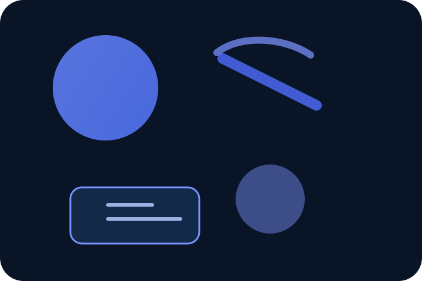

Research Ecosystem
Visible progress for secure, sovereign computing.
See a professional platform narrative with secure identity, policy-driven language, and experimental computing research showcased as real progress.
QXS Safe Manager
QXS Lang
QXS OS